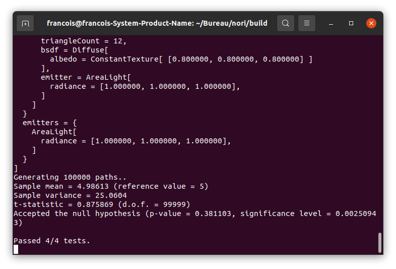

Part 1: Dielectric BSDF
We had to implement an idea dieletric brdf. The implementation was not that hard. The first step is to check if the ray is going to be reflected or refracted. How can we do this? The answer is the fresnel equations. In the case the ray is reflected, we return the reflection of the ray. In the case the ray is refracted, we can compute the new vector using the Snell's equations. Of course for both cases, we need to fill the data structure BSDFQueryRecord.
Part 2: Path Tracing
For this part of the assignement, I created two new files, namely path_mats.cpp & path_mis.cpp
path_mats Implementation
The pats_mats integrator is very similar to the direct_mats one. The only difference is that we project
the ray until the russian roulette says stop. In the direct one, we trace the ray and project only a
second ray and then we stop. The tricky part of the implementation is that we need to create a Color3f
data structure with some attenuation.
The function works as follow.
while [TRUE]
- trace a ray
- check if we intersect a mesh
- add Le if the intersected mesh is an emitter
- update russian roulette -> stop if roulette says stop
- sample the BDRF
- trace a new ray
path_mis
This integrator was harder for me to implement. The general idea is similar to the direct_mis one. The
difference is that we want to trace the ray recursively and stop when the russian roulette takes the
decision to stop. The integrator first sample a light source. Then perform russian roulette and then
samples the brdf. Of course we always need to ajust the weights w_ems and w_mats. This is
straightforward with the available data structures in nori.
The function works as follow.
while [TRUE]
- trace a ray
- add Le if the intersected mesh is an emitter
- sample ems part
- update russian roulette -> stop if roulette says stop
- sample mats part
- check if the ray intersect a surface
- trace a new ray
Validation
Cornell box scene

Table scene
Part 3: Photon Mapping
For this part of the assignment, I extended arealight.cpp & photonmapper.cpp/p>
Implementation
The first function I extended is samplePhoton. First we sample the surface. Then we sample a ray from the surface and we evaluate the point. This function was straightforward.
The next function is the function preprocess. It is important to distinguish the number of emitted photons and m_photonCount. My implementation works as follow. For each emitted photon, we choose a randomEmitter and start tracing from this emitter. We trace the photon until the russian roulette says stop. The tracing process is not very complicated. The first step is to check if we intersects something. If the intersected mesh has a diffuse BSDF, we can store the photon. We choose the next ray by sampling the BRDF.
The last function is the LI function. We create a ray and trace it recursively until we don't get any intersection, the russian roulette says stop or the BRDF is a diffuse surface. When we intersect a diffuse surface, we search the photons, add the value of each photons and then return the result using the equation. If we intersect an emitter, of course we add the radiance to the final result. At the end, the process is very similar to the mats integrator.
Validation
Cornell box scene


Table scene

Clocks scene